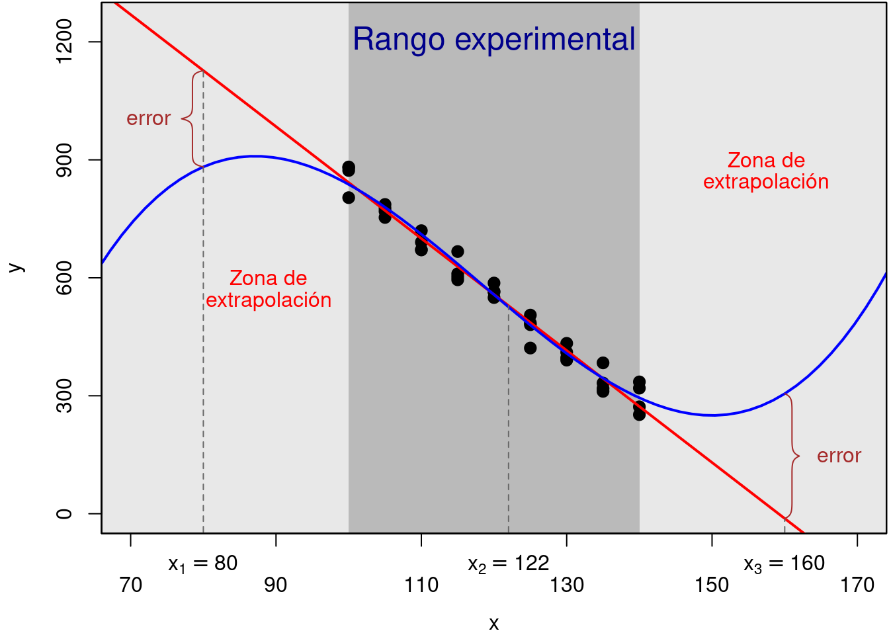

En ocaciones interesa realizar inferencias sobre la respuesta, para un valor apropiado \(X = x_0\), así:
Estimación puntual y por intervalo de la respuesta media \(E[Y|x_0]\).
Predicción de valores futuros \(y_0 = \beta_0 + \beta_1 x_0 + \varepsilon_0 = E[Y\vert x_0] + \varepsilon_0\).
En ambos casos el único medio para producir tales inferencias es la ecuación de regresión ajustada.
Conociendo que la ecuación de regresión ajustada, en un valor dado \({X = x_0}\), es:
\[\widehat{Y}_0 = \widehat\beta_0 + \widehat\beta_1x_0\]
Note que \({\widehat{Y}_0}\) también es una combinación lineal de las variables aleatorias \({Y_1,\ldots ,Y_n}\). En efecto,
\[ \widehat{Y}_0 = \widehat\beta_0 + \widehat\beta_1x_0 = \left(\sum^n_{i=1} m_iY_i\right) + \left(\sum^n_{i=1} c_iY_i\right)x_0 = \sum^n_{i=1} (m_i + x_0\, c_i) Y_i, \]
con las constantes \(m_i = \frac{1}{n} - \bar{x}\, c_i \hspace{.4cm} \text{y} \hspace{.4cm} c_i = \frac{x_i - \bar{x}}{S_{xx}}\) como fueron especificadas previamente. Por lo tanto, bajo los supuestos del modelo \({\widehat{Y}_0}\) es una variable aleatoria normal.
con esperanza:
\[ E\left[\widehat{Y}_0\right] = E\left[\widehat\beta_0 + \widehat\beta_1x_0\right] = E\left[\widehat\beta_0\right] + E\left[\widehat\beta_1\right]x_0 = \beta_0 + \beta_1x_0 = E[Y\vert x_0] \]
y su varianza:
\[ \begin{aligned} {V\left[\widehat{Y}_0\right]} &= {V\left[\sum^n_{i=1} (m_i + x_0\, c_i) Y_i\right]} = {\sum^n_{i=1} (m_i + x_0\, c_i)^2\ V(Y_i)}\nonumber\\ &= {\sigma^2\sum^n_{i=1} \left[\left(\frac{1}{n} - \bar{x}c_i\right)+x_0c_i\right]^2} = {\sigma^2\sum^n_{i=1} \left[\frac{1}{n} + (x_0-\bar{x}) c_i\right]^2}\nonumber\\ &= {\sigma^2\left[\frac{1}{n} + \frac{(x_0-\bar{x})^2}{S_{xx}}\right]} \end{aligned} \]
\[ \widehat{Y}_0 \sim N\left(E[Y\vert x_0], \ \sigma^2\left[\frac{1}{n} + \frac{(x_0 - \bar{x})^2}{S_{xx}}\right]\right) \]
Esto es, \(\widehat{Y}_0\) es un estimador insesgado de la respuesta media.
Note que, \(\widehat{Y}_0\) también es un estimador para un valor futuro \(y_0\), pero en este caso es un estimador sesgado. De ahí que la cantidad \(y_0 - \widehat{Y}_0\) represente al error de predicción, el cual se sabe tiene media cero.
Tanto las estimaciones de valores de la respuesta media como las predicciones de valores futuro deben cumplir una condición sobre el valor fijo \({X = x_0}\) para que tal estimación/predicción sea válida.

Figura : Ilustración de puntos de interpolación y extrapolación
Se puede demostrar que bajo los supuestos del modelo:
\[ {T = \frac{\widehat{y}_0 - E[Y\vert x_0]}{\sqrt{\widehat{\sigma}^2\left[\frac{1}{n} + \frac{(x_0 - \bar{x})^2}{S_{xx}}\right]}} \sim t_{n - 2}} \]
Por tanto un intervalo de confianza del \({(1-\alpha)\%}\) para \({\mu_{Y\vert x_0}}\) es:
\[ {\widehat{y}_{0} \pm t_{\alpha/2,n-2}\times\sqrt{\widehat{\sigma}^2\left[\frac{1}{n} + \frac{(x_{0}-\bar{x})^{2}}{S_{xx}}\right]}} \]
con \({\widehat{y}_{0}=\widehat{\beta}_0+\widehat{\beta}_1x_0}\) y \({t_{\alpha/2, n - 2}}\) es el percentil \({1 - \alpha/2}\) de la distribución \({t}\)-Student con \({n - 2}\) grados de libertad.
Dicho intervalo estima los posibles valores para un valor particular de la variable respuesta (no para su media) en un valor dado, \({X=x_0}\). Asumimos que este valor particular es un valor futuro de la variable aleatoria \({Y}\) y por tanto, no fue utilizado en la regresión.
Si \({Y_0}\) es un valor futuro y \({\widehat{y}_0 = \widehat{\beta}_0 + \widehat{\beta}_1x_0}\) es su estimador, entonces estas dos variables aleatorias son estadísticamente independientes, dado que \({Y_0}\) no es utilizado para hallar a \({\widehat{\beta}_0}\) y \({\widehat{\beta}_1}\).
Por tanto, el estadístico:
\[ {T=\frac{\widehat{y}_0-Y_0}{\sqrt{\widehat{\sigma}^2\left[1+\frac{1}{n}+\frac{(x_{0}-\bar{x})^2}{S_{xx}}\right]}} \sim t_{n-2}} \]
De ahí que, un intervalo de predicción del \({(1 - \alpha)\%}\) para \({Y_0}\) está dado por:
\[ {\widehat{y}_0\pm t_{\alpha/2,n-2}\times\sqrt{\widehat{\sigma}^2\left[1+\frac{1}{n}+\frac{(x_0-\bar{x})^2}{S_{xx}}\right]}} \]
Donde, \({t_{\alpha/2, n - 2}}\) es el percentil \({1 - \alpha/2}\) de la distribución \({t}\)-Student con \({n - 2}\) grados de libertad.
Para la respuesta media se pueden probar hipótesis a partir de la construcción y el análisis de los intervalos de confianza definidos anteriormente. Esto es, para probar a un nivel de significancia \(\alpha\), el siguiente juego de hipótesis:
\[ \begin{aligned} {H_0:\ E[Y\vert x_0] = c_0}\nonumber\\ {H_1:\ E[Y\vert x_0] \neq c_0}\nonumber \end{aligned} \]
Donde \(c_0 \in \mathbb{R}\), se calcula un intervalo de confianza del \((1 - \alpha)100\)% para \(E[Y\vert x_0]\) y si el valor \(c_0\) está incluido en el intervalo, entonces no se rechaza \(H_0\), o si el valor \(c_0\) no está incluido en el intervalo, entonces se rechaza \(H_0\).